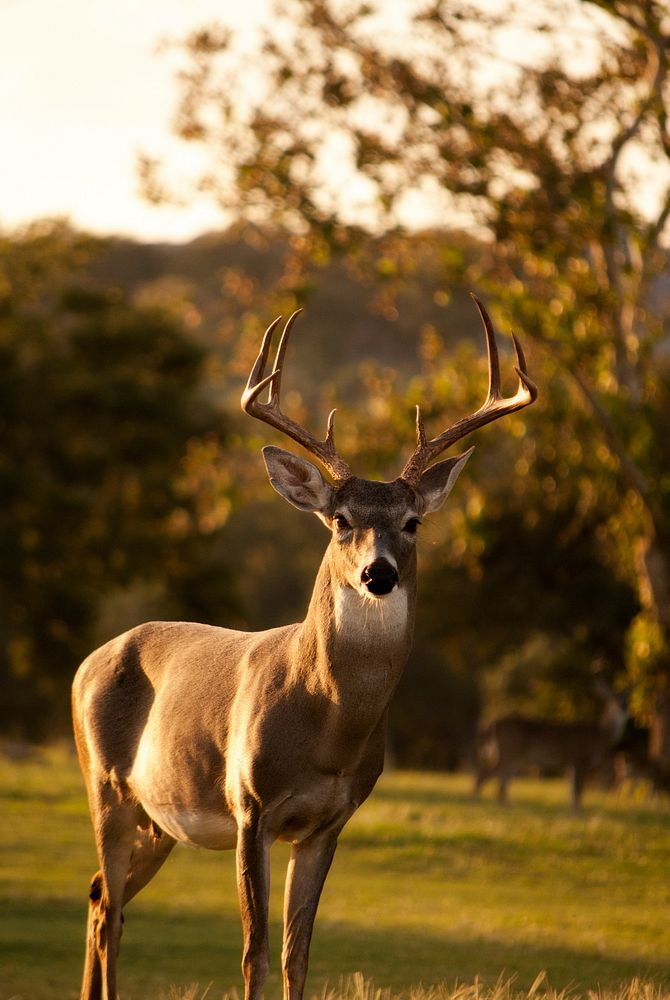

Why Deer?
 I have seen a handful of deer in my life, often on the sides of highways or out in fields next to back roads. Their beauty and magnificence draws me to them. I actually own a real, intact deer skull with antlers given to me by my grandfather who hunts. I find it really cool and use it as decor in my bearded dragon's enclosure!
This image uses a file type of JPG. JPG is a common format for photographs as they can display over 16 million colors. I chose this image because this buck is gorgeous, showing off why deer are one of my favorite animals. The landscape and the sunset glow give the picture the feel of a snapshot into the serenity of nature.
This image is from rawpixel.com.